1. Sequence Models Intuition¶
In deep learning NLP, sequence models are often the most widely adopted methods.
In this tutorial, we will go over the intuitions of sequence models.
1.1. Why Sequence Models?¶
Humans process texts in a sequential order (from left to right).
When we process texts and make classification, we utilize our reasoning about previous sequences to inform later decision making.
Recurrent neural network (RNN) addresses this issue by implementing networks with loops that allow information to persist.
The loop allows information to be passed from the previous time step to the next time step.

1.2. Neural Network¶
Neural network expects an numeric input, i.e., a numeric representation of the input text/word.
So the first step in deep learning is the same as traditional ML, which is text vectorization.
And because a sequence model like RNN eats in one word at a time, word vectorization is necessary and crucial.
1.3. Word Representations in Sequence Models¶
Like in traditional machine learning, feature engineering is crucial to the success of the computational modeling.
Of particular importance is the transformation of each text/word into numeric representation that has a significant portion of its semantics.
One-hot encoding is the simplest way to represent texts/words numerically.
If the corpus vocabulary size is V, each word can be represented as a vector of size V, with its corresponding dimension to be the value of 1 and the rest being 0’s.
A text can also be represented as a vector of size V, with each dimension to be the occurrence (or frequencies) of the words on each dimension (i.e., bag-of-words text vectorization).
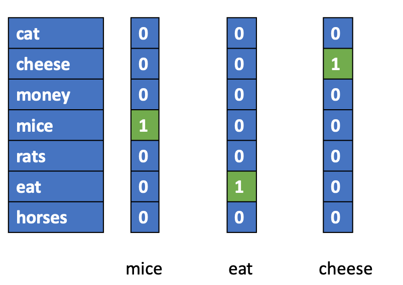
The main problem with this one-hot encoding of words is that the semantic distances in-between words are all the same, i.e., \(D(mice,rats)=D(mice, horses)= 0\).
1.4. Word Embeddings¶
Now via neural network, we can learn word embeddings automatically. (See Word Embeddings lecture notes).
These word embeddings allows us to perform computation of lexical semantics.
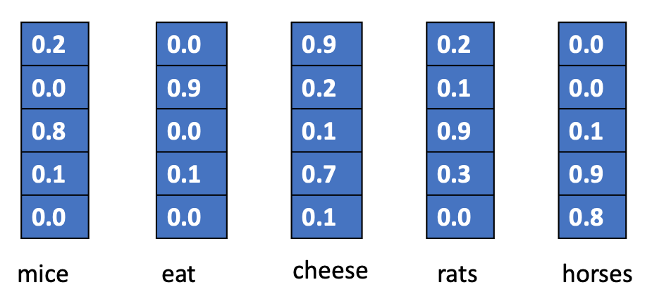
import sklearn
from sklearn.metrics.pairwise import cosine_similarity
import numpy as np
mice = np.array([0.2,0.0, 0.8, 0.1, 0.0])
rats = np.array([0.2,0.1,0.9, 0.3,0.0])
horses = np.array([0.0,0.0,0.1,0.9,0.8])
cosine_similarity([mice, rats, horses])
array([[1. , 0.97575491, 0.16937447],
[0.97575491, 1. , 0.30567806],
[0.16937447, 0.30567806, 1. ]])
While each dimension of the word embeddings may not have very transparent semantic fields, the results out of the semantic computation do reflect a lot the lexical semantic relations between words.
Please see Mikolov et al’s seminal works:
1.5. From One-hot to Embeddings¶
Therefore, we often add Embedding Layer as the first layer of a sequence model to render all lexical items in a text into semantically informative embeddings (vectors).
Weights of the Embedding Layer can be trained along with the sequence model of the downstream NLP task.
Or alternatively, we can use pre-trained word embeddings, which were trained in a different task based on a much larger corpus.
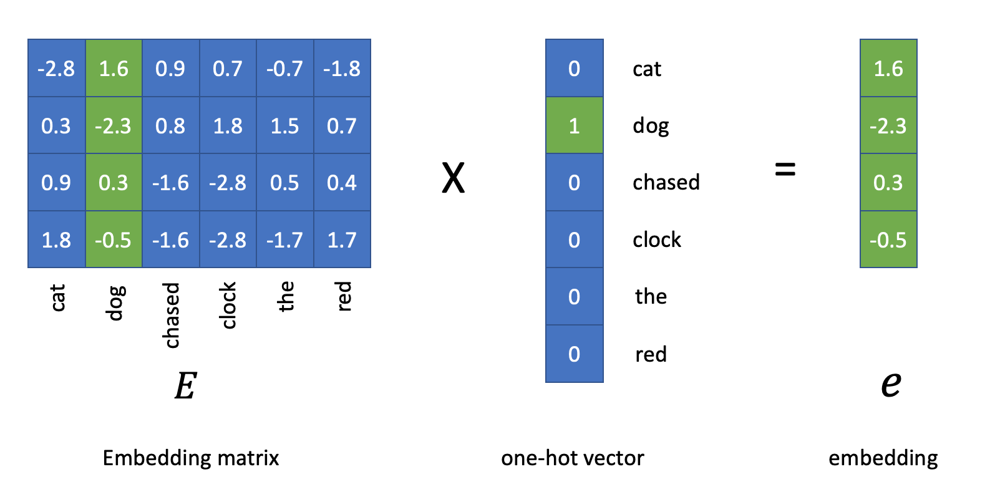
This is how an Embedding Layer works in
keras.layers.Embedding:
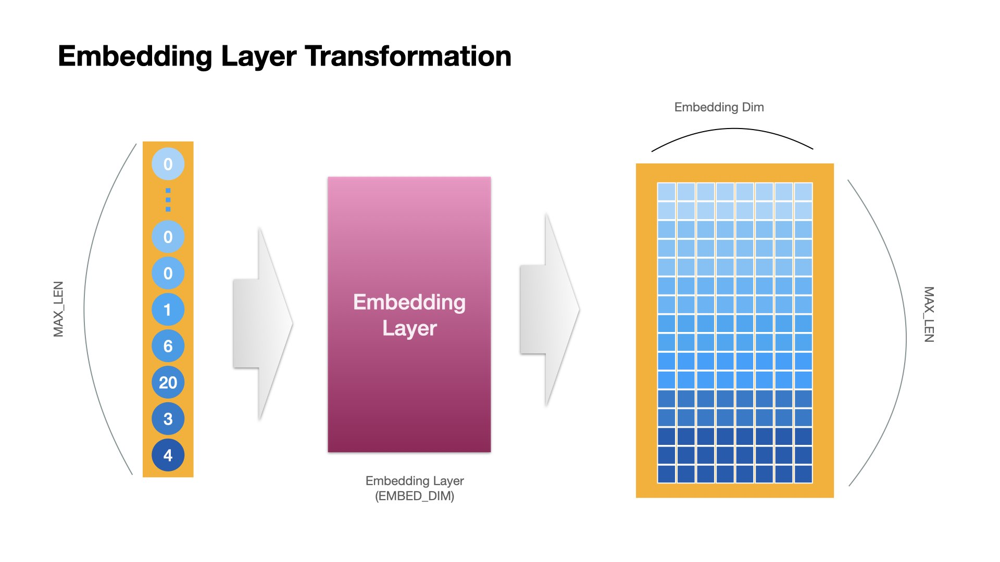
1.6. Recurrent Neural Network (RNN) Language Model¶
Words, as vectorized into embeddings, can now be the input tensors for a RNN.
Moreover, we can create a RNN-based language model.
A language model has two main objectives in its NLP applications:
To estimate the probability of a given sentence (or any other meaningful linguistic units)
To predict the upcoming word given the previous limited linguistic inputs
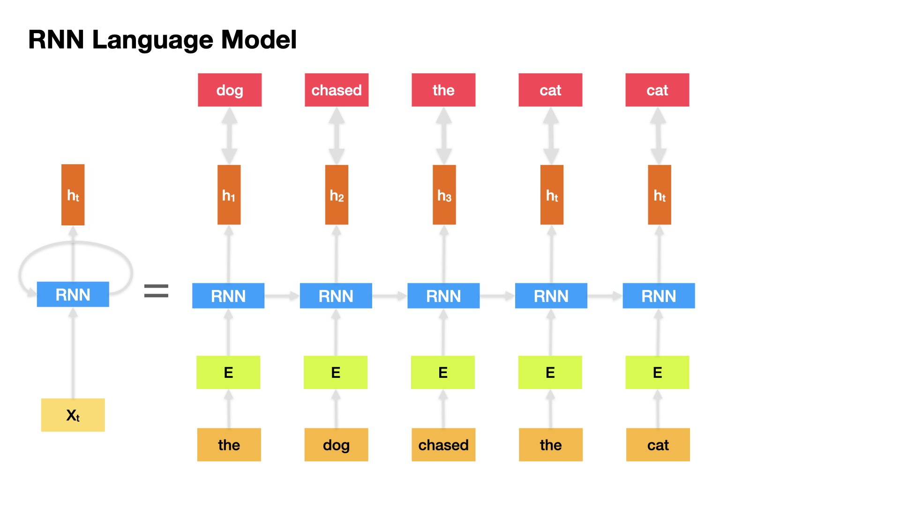
The RNN Langage model takes in one word at a time at each timestep and returns a tensor as the output (hidden state).
And the output at timestep i becomes the input of the RNN at timestep i+1.
How do we compute the loss of the RNN LM?¶
To evaluate the language model, we know the correct next-word, and we have the output tensor from the RNN, we just need a method to compute the difference.
First, we convert the correct answer (next word) into one-hot encoding.
Second, we make sure that our RNN LM returns a vector of the same size as the one-hot word vector.
Finally, we compute the loss using cross-entropy.
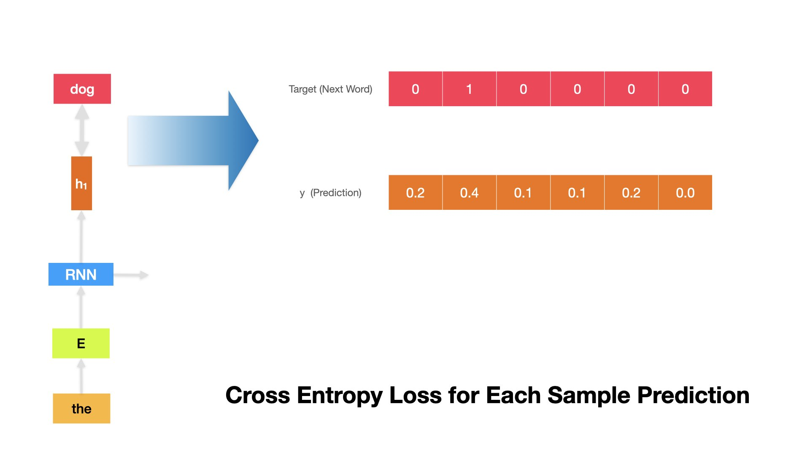
For example, if the target next word is dog, whose one-hot representation is
[0, 1, 0, 0 ,0, 0], and the RNN LM predicted \(\hat{y}\) is[0.2, 0.4, 0.1, 0.1, 0.2, 0.0], we can compute the cross-entropy at this time step as follows.
\(k\): refers to the dimensions of the one-hot vectors
\(t\): refers to the target next-word vector
\(y\): refers to the predicted \(\hat{y}\) from the RNN LM
def cross_entropy(y, t):
delta = 1e-7
return -np.sum(t * np.log(y + delta))
t = [0, 1, 0, 0 ,0, 0]
y = [0.2, 0.4, 0.1, 0.1, 0.2, 0.0]
cross_entropy(np.array(y), np.array(t))
0.9162904818741863
And we compute the average cross-entropy loss values across all time steps for a particular sample (i.e., for the entire input sequence).
\(N\): the number of words in the input text
We can also compute the average cross-entropy error for samples of a batch size.
We can also compute the average cross-entropy error for the entire training set.
1.7. Back Propogation (skipped)¶
With the defined loss function, we can learn how good our current model is in the training process (i.e., the distance between the true target and the predicted label).
In deep learning, we can use back propogation to find out:
how each parameter of the RNN LM is connected to the loss function
or, which parameter of the RNN LM contributes to the change of the loss function more
And therefore, we can adjust the parameters of the RNN LM accordingly.
The algorithm often used is called gradient descent
1.8. Types of Gradient Descent (skipped)¶
As we can compute the cross entropy in different ways, we can perform the gradient descent in different ways as well.
Batch Gradient Descent: Update the model weights after we get the average cross entropy of all the sequences in the entire training set (as one epoch).
Stochastic Gradient Descent(SGD): Update the model weights after we get the cross entropy of every sequence of the training set (across all time steps of course) (online).
Mini-batch Gradient Descent: Update the model weights after we get the average cross entropy of a subset of the sequences in the training set. (Recommended!)
1.9. From Vanilla RNN to LSTM and GRU¶
Issues with Vanilla RNN¶
An RNN on a sequence of words can be taken as a very deep neural network, where the depths of the network are the number of time steps of the sequence.
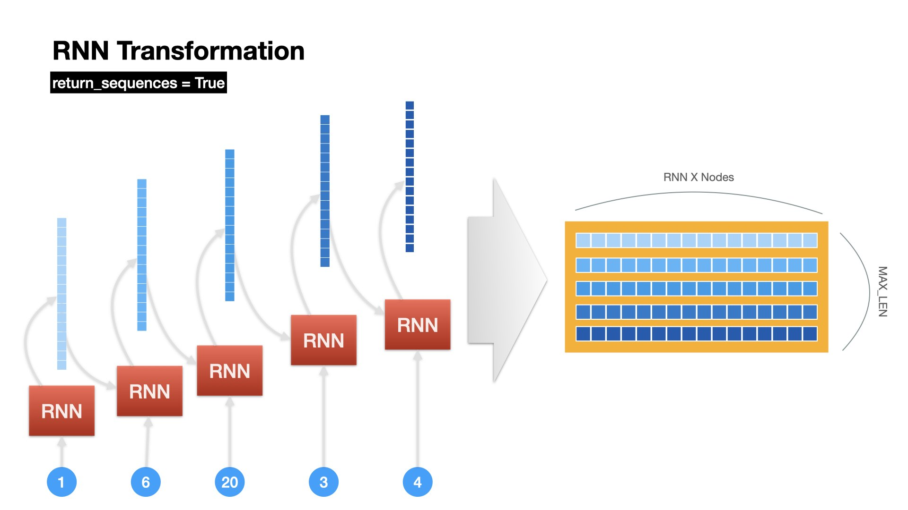
In back propagation, for longer sequences, we would run into the vanishing gradient problems.
Simply put, the gradients would become smaller and smaller as we back propagate further back to the previous time steps of the sequence.
The further back the weights are, the more likely their gradients would approach zero.
Why is vanishing gradient an issue?¶
If the gradient becomes vanishingly small over longer distances:
it is more difficult for RNN to learn the long-distance dependency relations between different time steps in the sequence.
it is less likely that RNN would learn to preserve information over many timesteps.
it is more likely that RNN would pay more attention to the effects of the recent time steps (i.e., biasing the RNN towards learning from sequential recency).
LSTM (Long Short-Term Memory)¶
A type of RNN proposed by Hochreiter and Schmidhuber in 1997 as a solution to the vanishing gradients problem.
Vanilla RNN
 (Source: http://colah.github.io/posts/2015-08-Understanding-LSTMs/)
(Source: http://colah.github.io/posts/2015-08-Understanding-LSTMs/)
LSTM
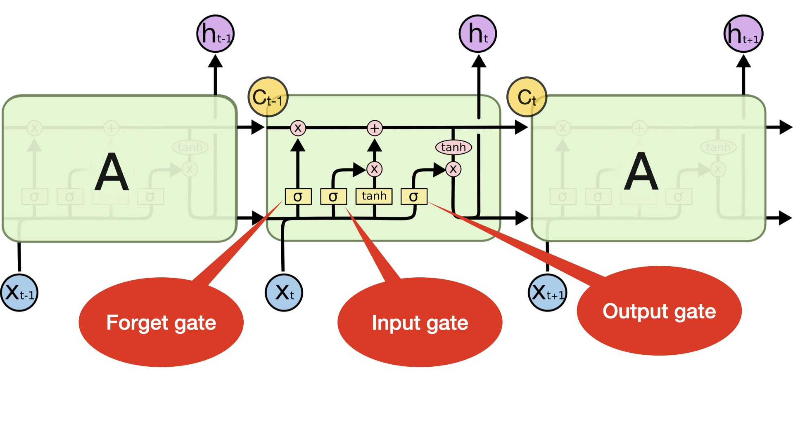 (Source: http://colah.github.io/posts/2015-08-Understanding-LSTMs/)
For every time step, LSTM keeps track of two states: a hidden state and a cell state
Both are of the vector length \(n\) same as the node/neuron number of the LSTM.
The cell state stores long-term information in the sequence.
The LSTM can erase, write and read information from the cell.
The selection of which information is erased/written/read is controlled by three corresponding gates.
There are three gates in LSTM: output, input, and forget gates.
The gates are also of the vector length \(n\) same as the node/neuron number of the LSTM.
On each time step, each element of the gates can be open(1),closed(0),or somewhere in-between.
The gates are dynamic: their value is computed based on the current cell state, hidden state, and the input x.
LSTM gates:
Input gate controls how much of the input (\(X_t\)) is used in computing the new cell state (\(C_t\))
Output gate determines how much of the new cell state (\(C_t\)) is used in the output hidden state
Forget gate determines how much of the old cell state (\(C_{t-1}\)) is used in the new cell state (\(C_t\)).

GRU (Gated Recurrent Unit)¶
Proposed by Cho et al. in 2014 as a simpler alternative to the LSTM.
On each time step, GRU keeps track of only the hidden state (no cell state).
GRU
 (Source: http://colah.github.io/posts/2015-08-Understanding-LSTMs/)
(Source: http://colah.github.io/posts/2015-08-Understanding-LSTMs/)
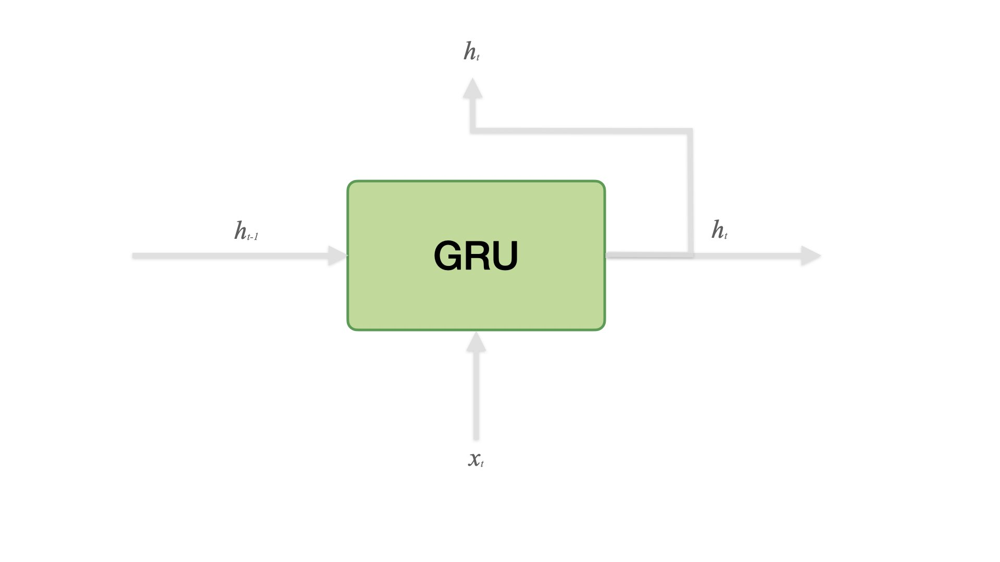
Heuristics¶
LSTM is more complex than GRU.
LSTM is a good default choice (especially if our data has particularly long dependencies, or we have lots of training data)
We may switch to GRU for speed and fewer parameters.
1.10. Variations of Sequence Models¶
Sequence Models¶
Most of the NLP tasks are sequence-to-sequence problems.
Depending on the nature of the tasks as well as their inputs and outputs, we can classify sequence models into four types:
Many-to-Many
Many-to-One
One-to-Many
Many-to-Many
Many to Many (Same lengths for input and output sequences)¶
Most of the tagging problems fall into this category (e.g., POS Tagging, Word Segmentation, Named Entity Recognition)
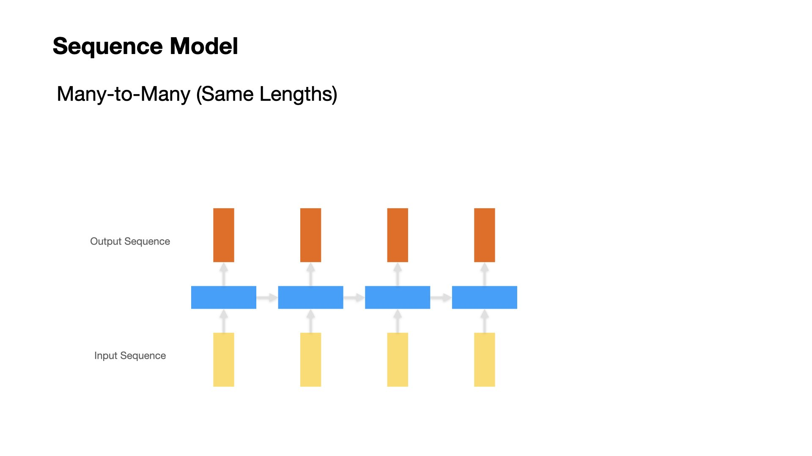
Many to Many (Variable lengths for input and output sequences)¶
Machine Translation
Chatbot Q&A
Text Summarization
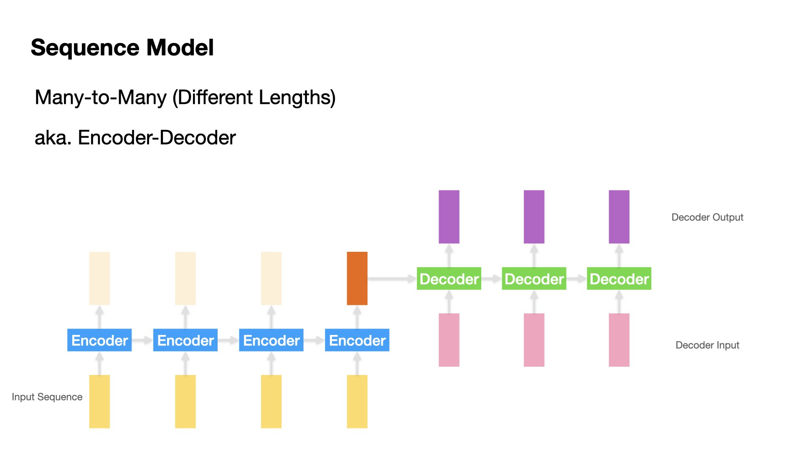
1.11. References¶
A must-read article on LSTM: Chris Olah’s blog post on Understanding LSTM Networks
Check Ch 5 and 6 in Deep Learning 2｜用Python進行自然語言處理的基礎理論實作
These lecture notes are based on a talk presented by Ananth Sankar: Sequence to Sequence Learning with Encoder-Decoder Neural Network Models. Some of the graphs used here are taken from Dr. Sankar’s slides. His talk is highly recommended!
Sutskever et al. (2014). Sequence to sequence learning with neural networks.
New York Times: The Great A.I. Awakening